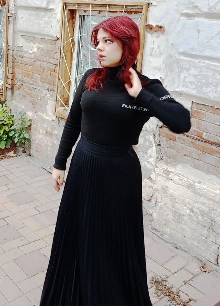

Ракита Анастасия Александровна
Создаю то, что не объяснить словами. Превращаю мусор — в дизайн. Нахожу красоту — в запрещённом.
Креативность и нестандартное мышление
- Умею видеть прекрасное в хаосе — нахожу вдохновение в случайных вещах (уличные плакаты, рваные газеты, упаковки).
- Превращаю ограничения в преимущества — если нет бюджета на материалы, создаю дизайн из того, что есть.
Адаптивность и скорость
- Быстро переключаюсь между аналоговым и цифровым — от коллажа на столе к макету в Figma за час.
- Учусь на лету — если проект требует нового инструмента, осваиваю его в процессе.
Коммуникация и коллаборация
- Легко нахожу общий язык с клиентами и командой: умею слушать, задавать вопросы и объяснять идеи без пафоса.
- Люблю коллаборации: могу и лидером быть, и поддерживать чужие идеи.
Эмпатия и понимание аудитории
- Делаю искусство доступным — мои коллажи понятны даже тем, кто далёк от современного искусства.
- Создаю дизайн для реальных людей — не для портфолио, а чтобы вызывать реакции.
Навыки
- Техники: Коллажи из мусора, лендинг, апсайклинг
- Инструменты: Figma, Photoshop, нейросети, Tilda